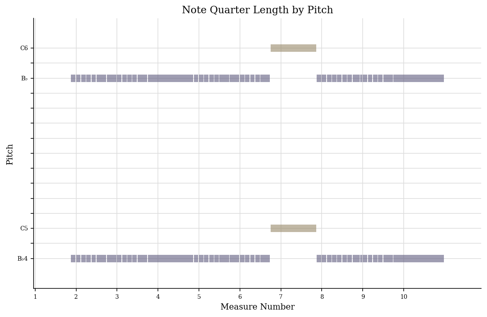
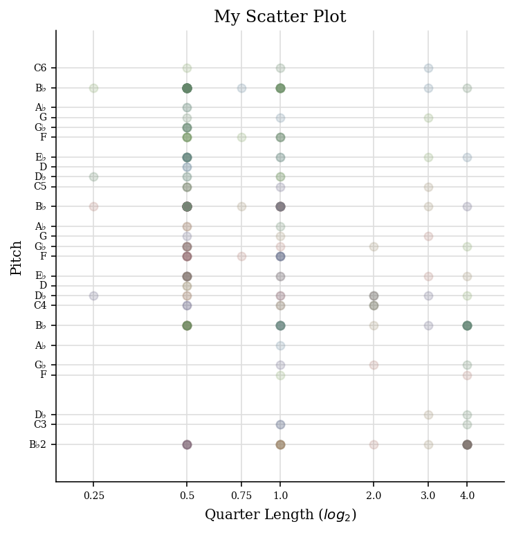
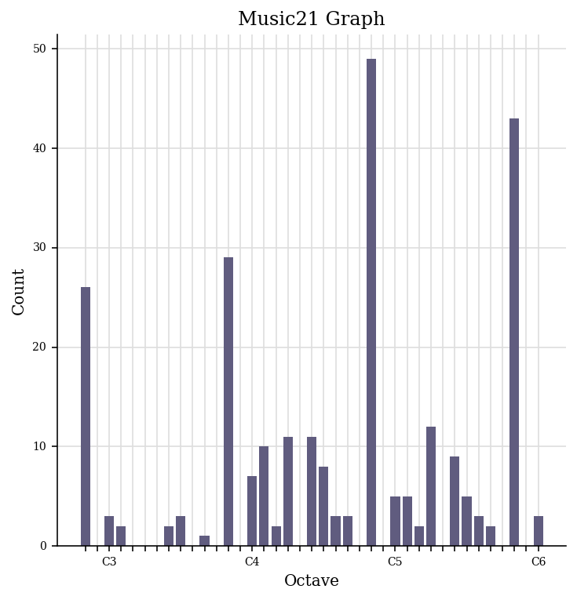

Task 1: Generating a Jsymbolic
After exporting my piece as a MIDI file, I created a Jsymbolic analysis.
I looked at these features of the piece:
- Range: 50.0
- Mean pitch: 67.03
- Most common pitch class: 70.0
- Last pitch: 34.0
- Most common rhythmic value: 0.5
Task 2: Generating Analysis Files
Piano Roll of Pitches:

Scatter Plot of Pitches

Pitch Histogram:
